- Aller dans le menu : Applications > Système > Gestionnaire de paquets Synaptic
- Une fenêtre apparait, authentification requise avec le mot de passe pour Root (superutilisateur)
- Saisir le mot de passe pour Root (administrateur) et valider avec Entrée ou cliquer > S'authentifier
- La fenêtre de Synaptic apparaît
Avant d'installer un paquet faire la mise à jour. Si la mise à jour a été éffectuée passer à l'étape suivante. - Cliquer en haut à droite > Rechercher
- Une fenêtre apparaît, indiquer le paquet à installer exemple : komi, cliquer > Rechercher
- En bas à droite une barre d'état montre l'avancement de la recherche, patienter.
- La recherche terminée :
En 1 : A gauche de l'écran en dessous de Toutes, s'affiche le nom du paquet qui a été saisi dans la fenêtre de recherche. Pour cet exemple, le paquet : komi
En 2 : Le paquet komi apparaît dans "la liste des paquets" au milieu de l'écran.
Cliquer > dans le petit carré blanc à côté de komi - En 1 : Une fenêtre apparaît pour faire un choix : Sélectionner pour installation
En 2 : La description du paquet sélectionné
Cliquer dans la fenêtre > Sélectionner pour installation - Pour fonctionner correctement, un paquet peut avoir besoin d'autres paquets appelés les dépendances.
Une fenêtre peut apparaître pour ajouter une liste de paquets (les dépendances)
Cliquer dans cette fenêtre > Ajouter la liste à la sélection -
Les paquets sélectionnés pour l'installation ont une flêche dans le petit carré.
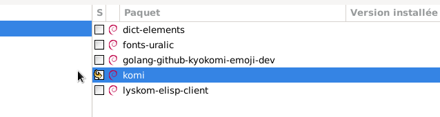
Pour information :
En plus de la flêche dans le petit carré, les paquets qui ont été ajoutés à la sélection sont surlignés en vert.
Dans cet exemple, les dépendances ne s'affichent pas sur la même page.
Cliquer en haut à droite sur Rechercher, puis saisir la dépendance libmikmod3 > Rechercher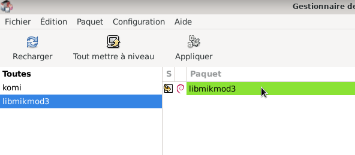
En haut, le bouton "Appliquer" doit être en noir
Cliquer sur > Appliquer, pour appliquer tous les changements à la selection.
- Après avoir cliqué sur Appliquer, une fenêtre apparaît indiquant :
C'est votre dernière chance de parcourir la liste des chagements prévus avant qu'ils ne soient appliqués.
Cliquer sur > Appliquer - Des fenêtres apparaîssent indiquant l'avancement du téléchargement en cours, patienter.
- Un message informe que les modifications ont été appliquées, cliquer sur > Fermer
- Le petit carré à coté de "komi" doit être vert, idem pour ses dépendances.
- Pour avoir des informations sur le paquet qui vient d'être installé :
Cliquer droit sur le nom du paquet, ici "komi" - Cliquer sur > Propriétés, une fenêtre affiche toutes les informations du paquet.
- Fermer la fenêtre
- Fermer l'application Synaptic : fichier > Quitter
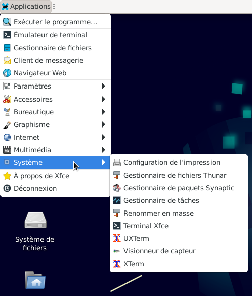
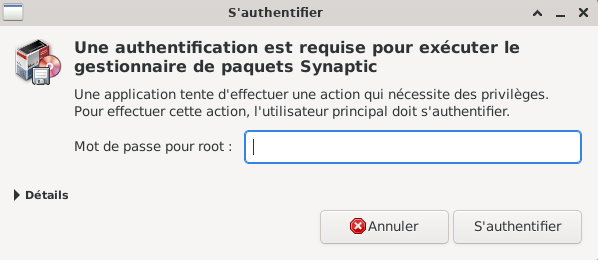
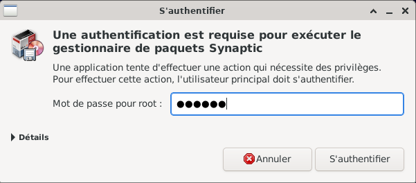
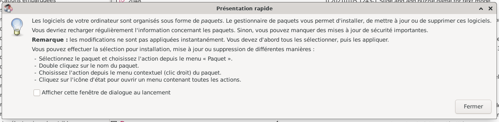
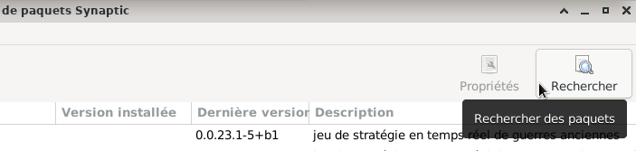
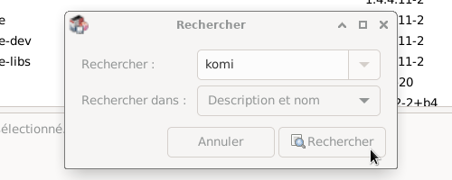
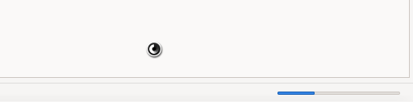
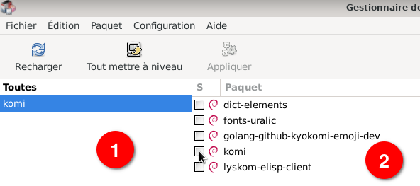
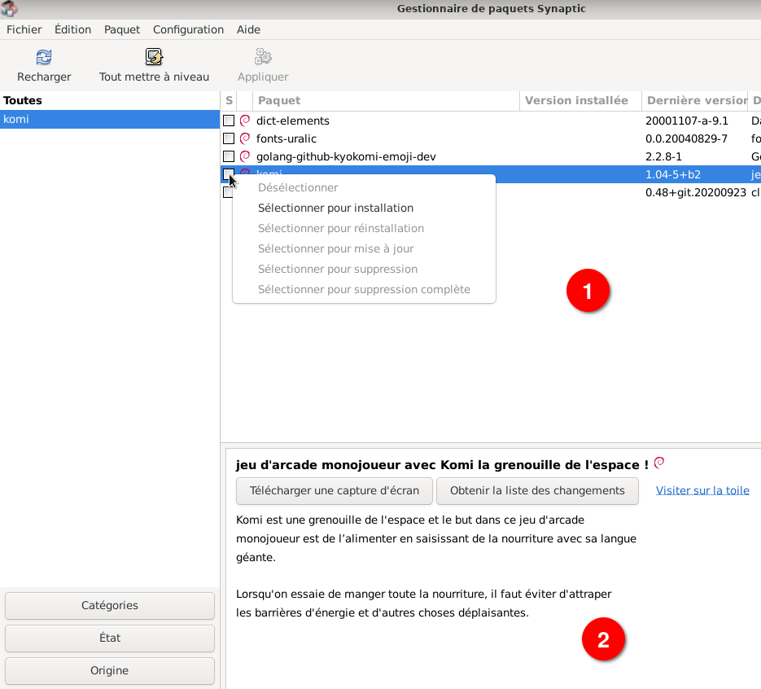
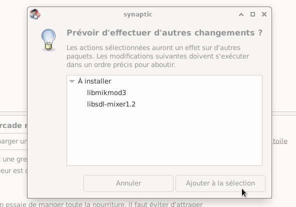
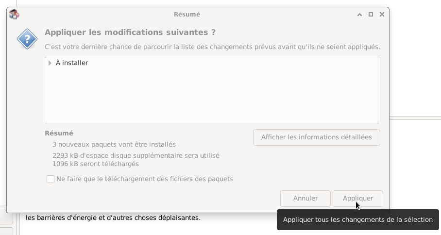
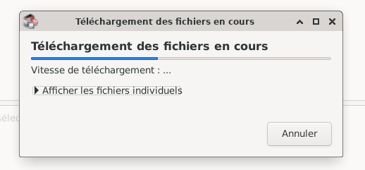
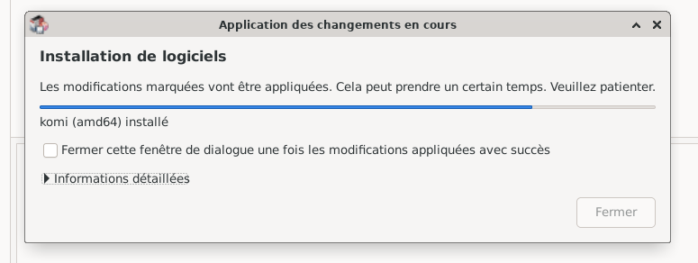
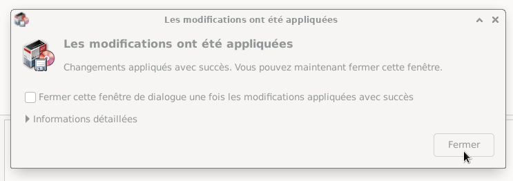
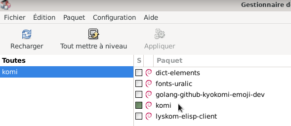
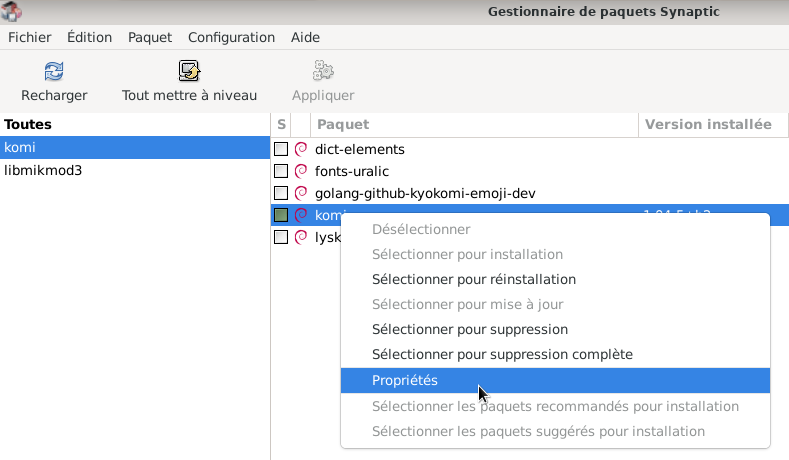
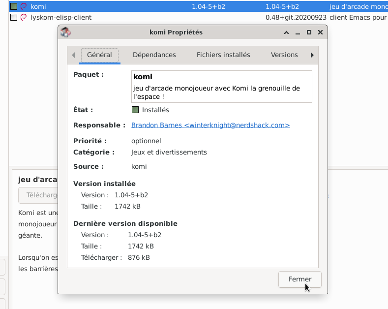